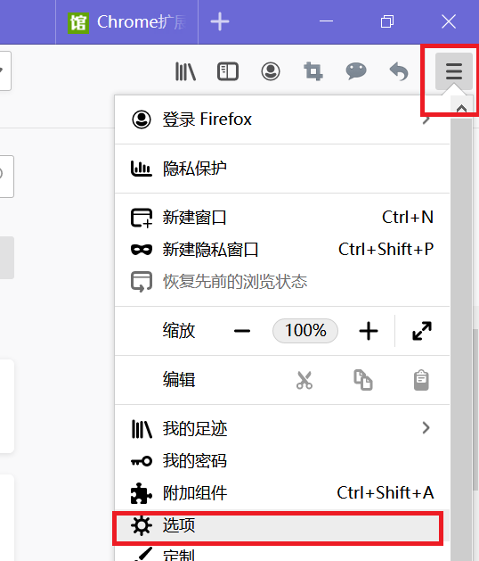
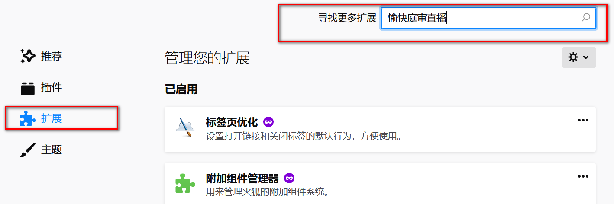
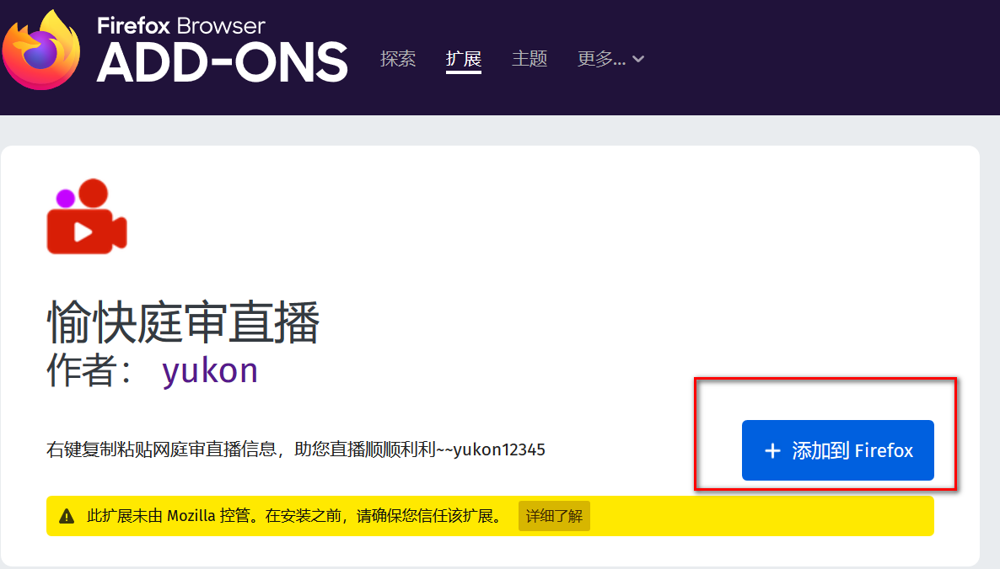
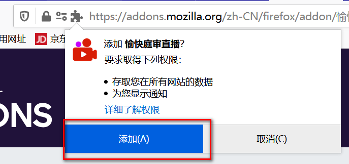

火狐安装直播扩展
火狐安装直播扩展
如果没有安装火狐的外网电脑，访问http://www.firefox.com.cn/ 下载安装。
按住Ctrl+shift+A快捷键打开扩展页面，或点击火狐浏览器右上角的菜单键图标，选择选项。(如下图)

点击“扩展”，并在搜索框里输入“愉快庭审直播”，回车进行搜索(如下图)

点击搜索结果，进入下载页面。点击添加到firefox，出现提示时，点击“添加”


这时火狐右上角出现图标，表示安装已成功！

按上面的步骤1、2进入扩展页面，点击右上角齿轮，选择检查更新，即可完成。另外请打开“允许自动更新”